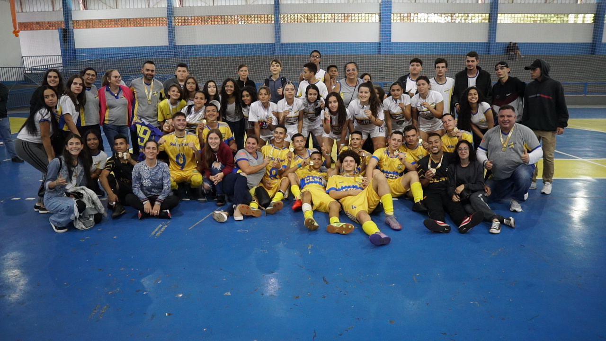

Campeão de Futsal Masculino A 2022 - Fase Municipal
Campeão de Futsal Masculino A 2022 - Fase Regional
Campeão de Futsal Feminino A 2022 - Fase Municipal
Vice-campeão de Futsal Feminino A 2022 - Fase Regional
Campeão de Futebol Masculino A 2022 - Fase Municipal
Campeão de Futebol Masculino A 2022 - Fase Regional
Campeão de Futebol Masculino A 2022 - Fase Macrorregional
4ª Melhor Equipe de Futebol Masculino A do Estado do Paraná 2022
Campeão de Futebol Masculino B 2022 - Fase Municipal
3ª Melhor Equipe de Futebol Masculino B 2022 - Fase Regional
Campeão de Futebol Feminino A 2022 - Fase Municipal
Campeão de Futebol Feminino A 2022 - Fase Regional
2ª Melhor Equipe de Futebol Feminino A 2022 - Fase Macrorregional
15° Melhor Equipe de Futebol Feminino A do Estado do Paraná 2022
